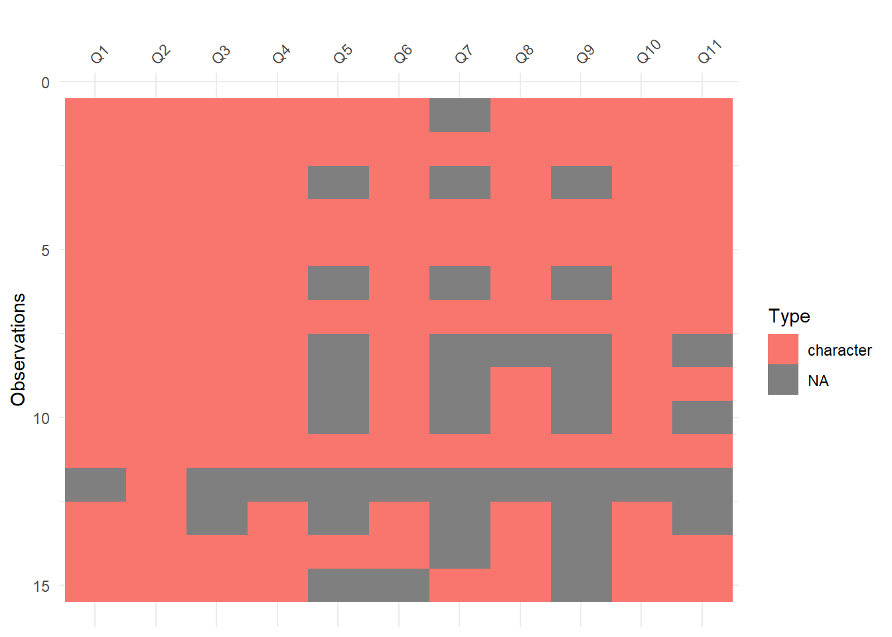
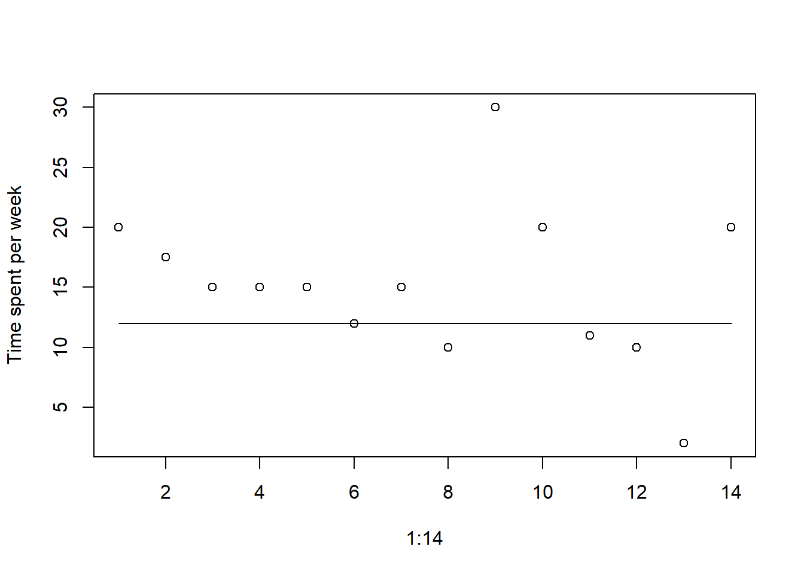
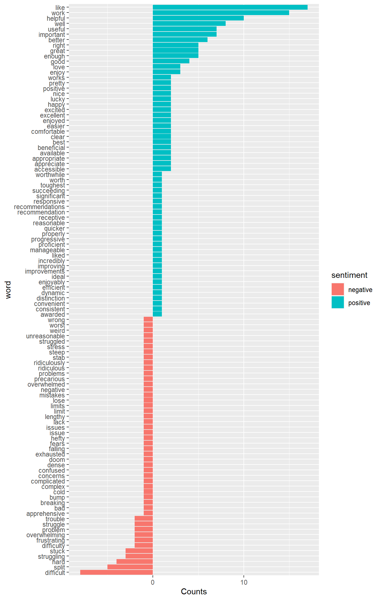
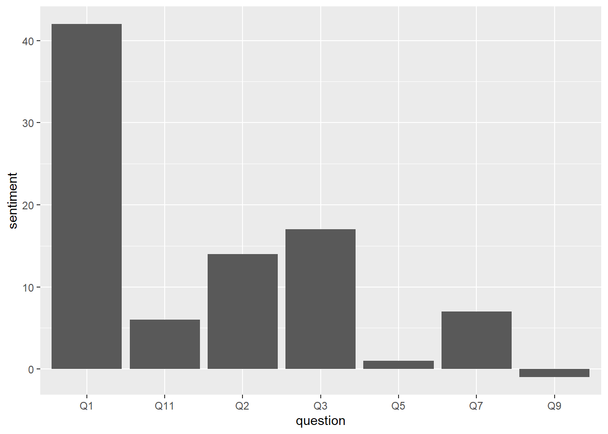
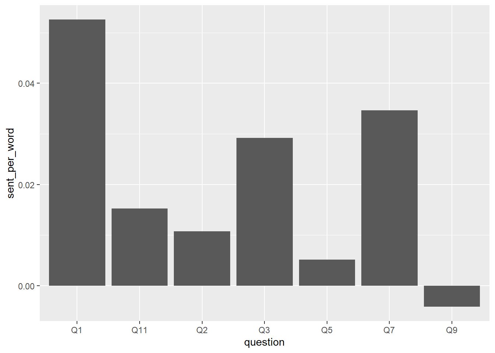
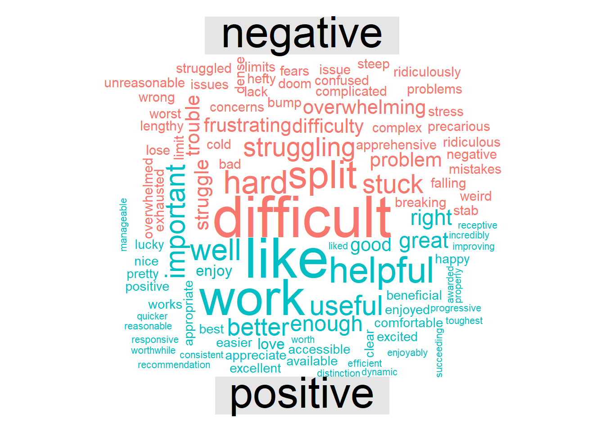

data_raw <- read_xlsx("Handel_CTL_Survey.xlsx")
d <- data_raw
dim(d)[1] 15 11Andreas Handel
October 23, 2019
Our center for teaching and learning administered a mid-semester survey to the students in my fall 2019 online Modern Applied Data Analysis course. I figured it would make for a nice and topical exercise if I performed some analysis of the survey results. Students agreed to have the - fully anonymous - results posted publicly. This is my quick and simple text analysis.
Load and take a look.
d <- d %>% clean_names() #clean column names, which are the full questions
orig_quest <- data.frame(Number = paste0('Q',1:11), Question = names(d)) #save names and replace with simpler ones for now
names(d) = paste0('Q',1:11) #just call each column as Q1, Q2,... originallly asked question is stored in orig_quest
kable(orig_quest) %>% kable_styling() #print them here for further reference | Number | Question |
|---|---|
| Q1 | whats_working_well_in_this_class_what_are_the_strengths_of_the_class_and_which_aspects_are_having_a_positive_impact_on_your_learning |
| Q2 | what_aos_not_working_so_well_in_this_class_what_aspects_are_having_a_less_positive_impact_on_your_learning |
| Q3 | what_specific_changes_do_you_think_should_be_made_to_improve_your_experience_in_this_class |
| Q4 | i_think_the_pace_of_this_class_is |
| Q5 | are_there_specific_modules_that_should_be_adjusted_and_how_5 |
| Q6 | the_quantity_of_material_covered_in_each_module_is |
| Q7 | are_there_specific_modules_that_should_be_adjusted_and_how_7 |
| Q8 | the_level_of_difficult_of_each_module_is |
| Q9 | are_there_specific_modules_that_should_be_adjusted_and_how_9 |
| Q10 | on_average_i_spend_this_many_hours_per_week_doing_work_for_this_course |
| Q11 | finally_what_is_your_gold_star_top_choice_number_one_recommendation_for_a_constructive_change_your_instructor_can_make_in_this_course |
More cleaning

#looks like a few students left some entries blank. Should be ok. One student only answered 1 question. Quick look at entry.
print(d[12,2])# A tibble: 1 × 1
Q2
<chr>
1 Elc system not work well for online class#ok, not too useful (though I agree with the statement). Let's remove that student/observation.
d<- d[-12,]
# most questions were free text, but some were specific choices, so should be grouped as factor.
d <- d %>% dplyr::mutate_at(c("Q4", "Q6","Q8"), factor)
#Q10 is number, should be numeric but was text field so different entries exist
#small enough to print here
print(d$Q10) [1] "20" "15-20" "15 or more" "15"
[5] "14-16" "12" "15" "10"
[9] "30" "20" "10 to 12 hours" ">10 hours"
[13] "2" "20" #ok, this is kinda bad style, but the dataset is so small that it's easiest to replace the non-numeric values by hand. I'll set them to their mean or the specified limit.
d$Q10[c(2,3,5,11,12)] <- c(17.5,15,15,11,10)
d$Q10 <- as.numeric(d$Q10)
print(d$Q10) [1] 20.0 17.5 15.0 15.0 15.0 12.0 15.0 10.0 30.0 20.0 11.0 10.0 2.0 20.0| Number | Question | |
|---|---|---|
| 4 | Q4 | i_think_the_pace_of_this_class_is |
| 6 | Q6 | the_quantity_of_material_covered_in_each_module_is |
| 8 | Q8 | the_level_of_difficult_of_each_module_is |
Q4 Q6 Q8
just right:10 right amount:4 just right :10
too fast : 4 too much :9 too difficult: 3
NA's :1 NA's : 1 
Based on answers to questions 4,6 and 8, the majority of students think the pace and level of difficulty of the course is right but the amount of material covered is too much. Based on answer to Q10, students spend more time than my target (12 hours, solid line). Even accounting for some “inflation factor” (people generally over-estimate the time they spend on tasks like these, counting all the other things they do at the same time e.g., texting/email/FB/drinknig coffee/…), the overall amount seems too high, and it agrees with Q6 answers about too much material.
First conclusion: Reduce weekly workload, probably best by reducing assigned reading (see text answers which I already glimpsed at 😃).
Questions 5, 7 and 9 ask how modules should be adjusted regarding pace, quantity and difficulty, so it’s worth looking at those questions on their own.
d2 <- d %>% dplyr::select( Q5, Q7, Q9)
is.na(d2) #some students didn't write anything for any of those questions, remove before printing content. Q5 Q7 Q9
[1,] FALSE TRUE FALSE
[2,] FALSE FALSE FALSE
[3,] TRUE TRUE TRUE
[4,] FALSE FALSE FALSE
[5,] FALSE FALSE FALSE
[6,] TRUE TRUE TRUE
[7,] FALSE FALSE FALSE
[8,] TRUE TRUE TRUE
[9,] TRUE TRUE TRUE
[10,] TRUE TRUE TRUE
[11,] FALSE FALSE FALSE
[12,] TRUE TRUE TRUE
[13,] FALSE TRUE TRUE
[14,] TRUE FALSE TRUEd2 <- d2[which(rowSums(is.na(d2)) != 3),] #remove all rows/obersvations that have NA to all 3 questions
names(d2) <- c('too fast','too much','too hard')
knitr::kable(d2) %>% kable_styling() ##show rest| too fast | too much | too hard |
|---|---|---|
| All of them are to long except for module 2. | NA | The quizzes are becoming ridiculously difficult. |
| None, I have enjoyed the pace. | None, I think the content is appropriate. | The toughest module thus far in the course was the strings module. Though it should be noted, I think the content was very appropriate to cover the concepts of this module as they are quite difficult. I really benefited from completing some of the Regex crosswords while working through this chapter. |
| I think all modules need to be adjusted. | Considering we have only done the first half of the class and the shortest amount of time I have spent in one week on this class was the first module and I still did more than 9 hours of work for what should have been a half week seems unreasonable. For all other modules I spend over 12 hours each week on this class sometimes upwards of 25 hours in a single week. | I don't think the modules themselves are difficult just the content is being squeezed in and the time it takes doesn't correlate to the amount I feel like I'm learning, where I should be learning/proficient in much more than I currently am based on the amount of time spent. |
| The visualization module is pretty hefty in terms of how much time is spent. But it's all the same topic so I don't know how that would be split up. | see above | The modules are just difficult enough that the first couple times I try I struggle and it's hard, but after giving it a go it becomes much easier and I get it. So its enjoyably difficult. |
| I feel like I like the order and pace of the course materials. We can learn all of the material in the module in one week - it's just exhausting to do so. | Trim the reading in the modules and add more exploratory exercises. | I feel like the modules scale up in difficulty each week, but proportionally to the growth in our skills. I feel like I am really learning R for the first time! (After three other courses in R...) |
| In the tidyverse module, we used ggplot, but then we actually learned about how to do ggplot which would have been helpful before tidyverse. The R module was definitely a lot of material and the coding exercise was a steep learning curve for the first true coding exercise of the course. I understand sometimes the best way to learn something is struggling through, but I think it can be difficult for new students to make the sudden leap from follow a specific script in a book chapter to make up your own code. Maybe something as in altering existing scripts first? | While now there is a distinction on what is going to be on the quiz, there are multiple chapters and tutorials I haven’t read through yet. I’m actively searching to see what to prioritize first in a module. Module 4/5 also had a lot of (useful) material to work through. | I think working through the material for the quizzes themselves is just the right difficulty but the assessments range from not so difficult (Tidyverse) to spending a couple of hours googling and troubleshooting (first R and Visualization). While you said to spend no more than 1 or 2 hours on Visualization, it still took me 4 hours to figure out. |
| Not that I see so far. | NA | NA |
| NA | Most modules waver between just the right amount and a little too much. However, this goes hand in hand with what I have identified also as a strength of the course (great curation of resources), so perhaps adjustment isn't necessary... maybe it would be useful to have a more organized list of required and optional readings. | NA |
Conclusions from anwers to those questions: Overall too much material (see above), level of difficulty overall ok but too fast/crowded. Again, solution is to reduce (required) material.
Next, let’s look at “whats working/not working” questions.
d2 <- d %>% dplyr::select( Q1, Q2)
names(d2) <- c('good','bad')
knitr::kable(d2) %>% kable_styling() | good | bad |
|---|---|
| The positive impact would be that I am learning completely new things I have had no exposure too. | This class is extremely overwhelming. It is online and the professor is the worst time estimator I have ever seen. He assigns way to much with absolutely no emphasis on what is important. As he is the “expert” in this subject he should be able to narrow it down and make this course more reasonable. I should not be spending 20-25 hours a week on one course that is 3 credits. |
| I really enjoy the exercises assigned for each module. I am receiving a good amount of background information from the modules/reading, however I feel I really start to understand the material once I have used it in practice. Additionally, a good portion of the exercises thus far are directly applicable to the analysis I will be using for my personal research which is excellent practice. I also really appreciate that the structure of the course. I really struggled with the basic work flow of R scripts and GitHub initially as I am newer to the program. However, the progressive flow that this course has created has allowed me to learn the process step-by-step and frequently connected back to information that was previously used in an earlier module. As a result, I have become very comfortable with the basic usage/flow of R and I am excited to move into the more detailed functions of the program in the latter half of the semester! | The only small issue I have encountered thus far with this course is with the quiz time limits. I am sometimes having trouble sifting through all of my notes quickly enough to properly answer the quiz questions. I take approximately 10-20 pages of notes on each module (depending on the size and amount of exercises) and I can sometime struggle to locate the specific material in my notes within these time constraints. I absolutely understand the need for a time limit with an online class structure, however 20 minutes can be a bit tight for some of the quizzes. A simple bump from a 20-30 minute time range to 30-40 minute time range would be more than enough to address all questions adequately, while still ensuring students review the module content beforehand. |
| I love the tidyverse package and thanks to instructions on R primer. I love R primer, because it raise the problem and then have a space to write code to try, and available solution. | Some materials (R data science, IDS) are useful too. However, I do not like them. The reason is that they give me the knowledge, and explain some simple code. Then, I have exercise part with more complicated questions. I do not know how to do it sometimes and got stuck. One example is chapter about regular expressions. Another thing is that this class took me so much time per week. It is one third of my week. I still have other three classes, and research duties. I expect that taking class is the quicker and better way to learn than learning by myself. This class is not what I expect. It is too time-consuming because I mainly have to learn by myself. |
| The R primers are very useful for understanding the material, the exercises you give us, and some of the exercises in the IDS book (however, they need to be narrowed down to what is actually important). | Having 5+ chapters of reading each week isn't useful. The readings in general aren't useful for coding, at least for me. They should supplement and be a reference for the actual coding we are doing but not be the entire basis of the quizzes. I spend so much time reading and I don't actually understand any of it unless I'm doing the coding. However, expecting to do every exercise that comes with some of the reading isn't working because I currently spend at least 12 hours every week just doing the exercises that go with readings and I end up not retaining much because I'm overwhelmed. |
| I really enjoy having a structured way to learn r for data analysis instead of just learning it on my own. It makes it much more manageable and mentally-forgiving when there are other people learning/struggling at the same time as you. All of the data/resources are in one place and present in a timeline that makes it easier to understand and learn. I also really enjoyed how he makes us go back to the other student's repositories and work with them. It helps foster the feeling/attitude that we're classmates and get to know each other more even though it's an online course. | The resources are a lot to work through. I don't have previous R experience but this class is taking a lot of my time to work through the R for data science book. |
| The amount of information available. Strengths of the class are being able to work with other students to complete assignments and get ideas from one another. | The amount of work we have to do every week, including reading, quizzes, and lengthy assignments. Someone new to coding might find this extremely overwhelming considering they have other classes to work on as well as their own laboratory work. The quizzes make me feel like I have not learned anything because they are very weird, specific questions that I have to spend a long time going back through the reading to hunt for. |
| The course website is very thorough. It is very clear that Dr. Handel has put a lot of thought and effort into building the materials and course for this class. The writing is very clear and accessible. The site and materials are very consistent, which is helpful. The RPrimers, IDS, and R4DS chapters are helpful (in that order, respectively). The class exercises are very helpful. I am finding myself coding more often and drafting unique codes, which was my goal from the start. This is the most well-rounded course in R I have taken. Dr. Handel's exercises are by far the most helpful. We get to think through the material and use resources as-needed. These are exercises I will need in my own analysis. I have been using these codes as guidelines for working through my own data sets. I love the R-Primers as an introduction, and then the Exercises. I think we could take a stab at the exercises without the IDS and R4DS readings, or have those readings embedded into the exercise. Such as..."Try to make this figure" If you are stuck, Chapter 4.5 might be a good a reference. | I'm lucky in that there are a five or six students in my department all taking this course. Since we see each other regularly, we can help each other along and make sense of the material. I can't imagine working through this course alone, with no face-to-face interaction. The group dynamic helps me read into what is important and helps trouble-shoot when there are problems. The eLC discussion board is not great for connecting with others... Outside of these few people that I am lucky to see in person, I think it is hard to connect with the other students to gauge if I am "on the right track" or "falling behind" or plain bad at coding. We don't engage much with other students, so it's hard to tell if they're succeeding or struggling as much as we are. I keep thinking - "am I the only one feeling this way?" The modules seem to be thick/dense for just one week's worth of work. As soon as I finish a module, I am exhausted by the material, but then have to start right back up again. I don't feel like I have enough time to play around with all of the functions we just learned before it's time to start learning new ones. I'd like more time to apply them to data sets in example exercises. I've been to a few meetings with my advisor now where I say that most of my week has been taken up with this course. Perhaps I need to work on my own time management and expectations for this course work. Of course, I do think the time investment will pay off! I am excited to start analyzing my own data set! To get by, I feel like I have started skimming the readings, or reading them "diagonally" as some people may say. I have "CTRL-F" through the readings just for the quizzes. I don't think this is ideal, and I'm sure Dr. Handel wouldn't want us to resort to this. |
| I like the exercises in R. While my lack of previous experience means I have to spend more time trying to understand how to put complex displays together, what I learn from this stays with me a lot better. | I know that I review the material quite a bit for the quizzes yet continue to be surprised at what actually shows up on the quiz. This may be a personal problem as the class distribution shows that other individuals are doing well. However, I know that it continues to be frustrating. Also, the MADA course on GitHub is still a bit difficult to navigate and the info given for each module is a lot to absorb without there being an application element. |
| The supplementary readings are useful, but that's about all that's having a positive impact on my learning in this class. | The class being online is convenient, but if the class were in person and I could see step by step instructions, and everything would make more sense. Yes I understand you learn by making mistakes but taking 20+ hours every single time I do an assignment or reading is absolutely ridiculous due to the fact that all of my instructions are typed out, and there's no "teaching" in my opinion. This class structure is not conducive to my learning style. There aren't even any videos of the professor lecturing and walking us through lessons. I'm not absorbing any material by reading over 50+ pages then being thrown an assignment and an overly detailed quiz that doesn't even focus on main points but extremely detailed findings that DO NOT showcase what I've learned. |
| The class is quite well structured with nice use of different video resources. | Some of the assignments are very much like busy work and are time consuming without being particularly helpful and just end up putting one under pressure during the week whenever there are so many other draws on ones time at graduate school. |
| I do like the material we cover since it’s mostly relevant, I feel like I’m learning more of the ins and outs of R each week! I think the set up of the class with readings then an assessment works well. | There is a lot of material to cover each week. While I enjoy it and I’m interested, it is all mostly new to me and I feel like I have to rush through the readings to do the quiz by Friday. |
| This class requires a lot of coding, and I had no previous experience with coding, but we were provided with a lot of resources and exercises to start from the beginning. | There are too much reading assignments. It really takes a lot of time for this class. I cold barely finish these assignments every week, not alone to digest them and use them. |
| I think this course is set up very well. The modules are constructed in a manner that makes the content accessible and the exercises are well guided. | I would say that nothing related to the class is having a negative impact on my learning. |
| We receive a ton of excellent resources. Dr. Handel is very responsive to my feedback, which I greatly appreciate. I was very apprehensive about taking an online course, but my fears have been completely assuaged. This class has already been incredibly beneficial to me. | As I've already shared with Dr. Handel, the online quizzes are sometimes frustrating in that we are only asked 6 to 7 very specific questions on a great deal of material. I don't feel we're given enough time to complete it, and partial credit isn't awarded. However, as I mentioned above, Dr. Handel is very receptive to feedback and I have already spoken with him about my concerns with this issues. |
Conclusions from anwers to those questions: Overall too much material, especially too much reading. R primers are good. Other resources are hit or miss. Quizzes are not working, need to be ditched or altered. Maybe more exercises. Find better alternative to eLC.
Finally, the 2 remaining questions are about improvements, phrased in 2 different ways. Let’s look at them together.
d2 <- d %>% dplyr::select( Q3, Q11)
d2 <- d2[-12,] #this student didn't provide answers to either question
names(d2) <- c('specific suggested changes','number one recommendation')
knitr::kable(d2) %>% kable_styling() | specific suggested changes | number one recommendation |
|---|---|
| Less information per module. Most of these modules should be split into two weeks. | You need to put yourself in the eyes of a graduate student who is new to R and has a minimal stats background. As a graduate student in general public health field, what are the most important things to prepare is for publishing papers, understanding data, etc. We should have spent two weeks on data wrangling and two weeks on data visualization. These are EXTREMELY important topics, and they were rushed through in one week. I do not think my understanding of how to do these things is good, and instead we are moving onto other topics that are less important. |
| As mentioned above, just a bit more time on the quizzes would be great! | A small increase in the time allotted to take the weekly quizzes. |
| I suggest that you can give the solution for this chapter ahead. We can learn through solution if we get stuck. To reduce time to learn by myself, I suggest that professor can create R scripts with coding and explain what is the purpose of the code by text or better having a video to show how the code works in purpose.I think that this way will be better than the way that students have to go through many chapters of reading. If going through many chapters, students have to learn the new things and be able to finalize the knowledge at the same. This process is hard. So, I suggest that professor finalize the knowledge, then show it to us. You can indicate book in case they are still confused or do not understand, and need to read further. | For the knowledge that I learn through the R primer, I am happy with them. However, for other chapters that have to read through R4DS, and IDS, it is too time consuming and not an efficient way to learn. If you can have a better resources for the knowledge covered in R4DS and IDS, I am happy with this course. |
| More homework assignments that mimic the material that is in the readings, where we can use the readings as a reference/starting point. I feel like if we replace the quizzes/readings with an assignment that goes over what is generally important from the chapters you assign it would be more worthwhile. | No quizzes - replace with short assignments that reinforce the material presented in the reading each week. Still makes it so you have to read but not that you have to spend hours upon hours doings so. Also as a side note - maybe introduce folders in the class github so that its organized by assignment so we can easily find things. |
| Specifically not much. | Establishing a working discussion board from the beginning would probably be the best thing. |
| I think that there should be more time allotted for the quizzes, simply because of the complexity of the questions as well as the vast amount of reading required. | Be a little more lenient on quizzes and giving out massive assignments. For an online course in coding, you're asking a lot from us. |
| It might be helpful to have "coding drop in sessions" where students can meet in a room, bring snacks, and discuss the course as a group. It would be helpful if each modules was spread out over two weeks. It would be helpful to have more of Dr. Handel's exercises (not necessarily the IDS R4DS ones). | Trim the modules |
| I know that I do significantly better on the exercise portions of the class as I can see where the material is applicable but, again, this may be a personal preference. One blanket recommendation would be improving the navigational ability of the GitHub course site and breaking down the sections within each module to highlight where outside links need to be used. | NA |
| If this class is going to remain online I think the professor should record himself lecturing and have a split screen showing him using R instead of reading everything to get instructions. I think the supplementary reading/interactive learnings are helpful, but they should be in addition to teaching, not the only mode of learning. At this point I don't even feel like my professor is teaching me, a website and book are (barely). | Either change back to in person instruction or have video lectures with a computer split screen to show examples, THEN supplement with readings and interactive learning. The entire course just can't be a written instruction list and a website with definitions. |
| Make the assignments more relevant rather than busy work or at least have a required part and then then optional parts because to have to do a time consuming assignment each week isn't beneficial | NA |
| I liked the quiz this week (Module 7) because you specifically said that the exercises were optional in the reading so it did take the pressure off of having to go through multiple chapters. If the purpose of the quizzes are to make sure we are reading the material, then it was nice to focus on the content of the chapters. (And not lose 30 minutes to solving one exercise) | exercises from chapters not be covered on quizzes. :) |
| Again, the class is great. The only improvements are needed by me. | I do think the tidyverse is so massive an undertaking for a beginner that it could be split into two modules. |
| Nothing in particular comes to mind at the moment, as I've felt very comfortable voicing recommendations to Dr. Handel as they arise :) | Alternative way of testing for our reading each week? As of right now, the quizzes are precarious (one wrong answer can doom a grade) and time-constrained, and a pretty significant source of stress for me. However, as mentioned earlier, Dr. Handel and I are in communication about this! |
Conlusions from these answers: Reduce content per module (or alternatively increase time). Adjust or drop quizzes. More exercises. Record some lectures or provide links to recordings.
So this is likely not too useful, but I wanted to play around with some automated text analysis. Maybe the computer can figure out things I can’t?
I don’t actually know how to do text analysis, so I’ll have to peek at the tidytext tutorial. Getting some ideas from this tutorial and the Text Mining with R book.
Turn all answers into a long dataframe of words
Look at most frequent words.
# A tibble: 835 × 2
word n
<chr> <int>
1 the 215
2 i 134
3 to 126
4 and 90
5 of 81
6 a 75
7 is 59
8 in 57
9 that 48
10 are 47
# ℹ 825 more rowsThe usual words are the most frequent.
Sentiment analysis, look at most frequent positive and negative words.
bing <- get_sentiments("bing")
positive <- bing %>% filter(sentiment == "positive")
d2 %>% semi_join(positive) %>% nrow()[1] 158negative <- get_sentiments("bing") %>% filter(sentiment == "negative")
d2 %>% semi_join(negative) %>% nrow()[1] 72Plot positive and negative words.
bing_word_counts %>% ggplot(aes(word, n, fill = sentiment)) +
geom_bar( stat = "identity") +
coord_flip() +
labs(y = "Counts")
About twice as many positive as negative words, i guess that’s good 😃. And the most frequent negative words do reflect that things are “too much”.
Let’s look at sentiment per question. Higher values are more positive.
question_sentiment <- d2 %>%
inner_join(bing) %>%
count(question, sentiment) %>%
spread(sentiment, n, fill = 0) %>%
mutate(sentiment = positive - negative)
ggplot(question_sentiment, aes(question, sentiment)) +
geom_bar(stat = "identity", show.legend = FALSE) 
Not surprising, the 1st question “what is working well” has lots of positive. Surprisingly, question 2, “what’s not working well” has fairly high positive sentiment. One problem could be that what I’m plotting is total counts, but I should probably normalize by total words written per question. Let’s try:
# A tibble: 7 × 2
# Groups: question [7]
question n
<chr> <int>
1 Q1 799
2 Q11 393
3 Q2 1304
4 Q3 582
5 Q5 193
6 Q7 202
7 Q9 240Yep, looks like most words were written by far for Q2. Maybe not a good sign? But maybe ok, since this specifically solicited feedback on all aspects. So let’s replot sentiment, normalized by number of words.
question_sentiment <- question_sentiment %>% mutate(sent_per_word = sentiment / words_per_q$n)
ggplot(question_sentiment, aes(question, sent_per_word)) +
geom_bar(stat = "identity", show.legend = FALSE) 
Ok, changed things a bit but not a lot. Q2 drop (expected) is most noticable change. Still, even for the “what’s not good” section, positive words dominate. That either means the course is quite good, or students are very optimistic or polite, or it might mean nothing at all.
Why not? Everyone loves a wordcloud, even if they are just fun to look at, right?
d2 %>%
inner_join(bing) %>%
count(word, sentiment, sort = TRUE) %>%
acast(word ~ sentiment, value.var = "n", fill = 0) %>%
wordcloud::comparison.cloud(colors = c("#F8766D", "#00BFC4"),
max.words = 100)
At this point, I ran out of ideas for further text analysis. I didn’t think analysis by word pairs, or sentences, or such alternatives would lead to any further interesting results. I looked in the Text Mining with R book for some more ideas of what kind of analyses might be useful, but can’t come up with anything else. Not that the above ones are that useful either, but it was fun to try some text analysis, which is a type of data analysis I’m not very familiar with. So, I’ll stop this here. Feel free to play around yourself, you have access to the raw data and this script in the GitHub repository.
There seem to be some clear themes to me, I’ll list them here and add my thoughts:
1. Less material per week/module: I’ll adjust reading and will move almost all external sources to the optional category, only require certain readings if I consider them essential. In a future version of the course, I’ll adjust all modules accordingly.
2. Change quizzes: There is a good bit of evidence showing that testing/quizzing helps learning. But I think the way I did it is covering too much per quiz, which didn’t work. Ideally, I wanted to build more learnr based content (like the one in module 10 and the R primers) which allow simple quizzes embedded (though currently no easy way of grading). I just didn’t have time to make a lot of those for this class. For the rest of the course, the quizzes I already created (up to M12) will be there, but only cover a limited amount of material, I won’t do any quizzes for the rest of the course.
3. More exercises: I had already planned a good bit of exercises for the rest of the class, now I’ll certainly make sure to focus on those. For future courses, I’ll add more of them.
4. Lecture recordings: I’m not too interested in recording myself going through things. It seems to me there are already 100s of such videos out there. I’ll try to find some good ones and place them in the Resources section. Suggestions appreciated.
Further thoughts: The theme of “too much” is clear. There are 2 main ways one can go. Reduce the amount of material covered, or increase time spent. The first will increase the survey nature of this course. I currently intend this to be a ‘broad but shallow’ survey course, the idea is to go through everything in one semester. Which is quite ambitious. At some point, I’m not sure if that works anymore or if the course becomes too superficial. The other option - and that’s common in other places that teach this material - is to split the course into separate ones. E.g. 1 semester/course only on R/Coding, 1 course on wrangling/visualization, 1 course on machine learning/model fitting. Or even further splits (e.g. the Coursera Data Analysis concentration has I think 9 courses.) That would allow more depth per course, but woudn’t allow students to get everything in a single course. I’m currently leaning toward sticking with the survey/intro/everything course and just further reduce materials. But I’d love to hear everyone’s opinion.
Also further note: In the future, once our EPID 7500 (R Coding) course is fully up and running and regularly offered, that course will likely become a pre-requisite for MADA. In that sense, a bit of sequencing will be introduced.
@online{handel2019,
author = {Handel, Andreas},
title = {Text Analysis of a Mid-Semester Course Survey},
date = {2019-10-23},
url = {https://www.andreashandel.com/posts/2020-02-15-MADA-survey-analysis},
langid = {en}
}